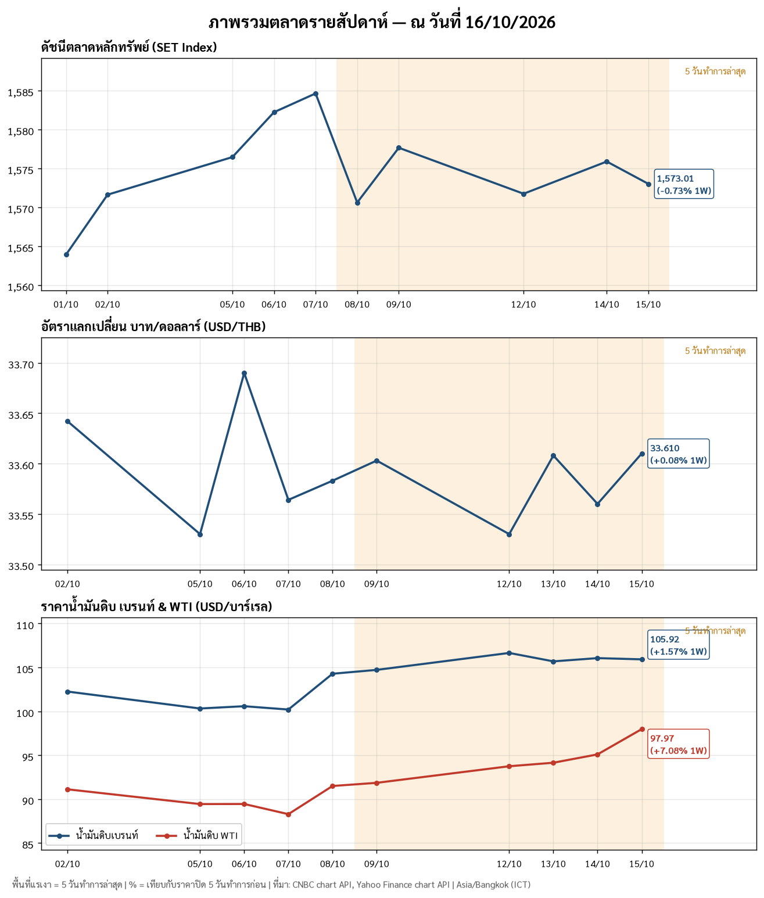
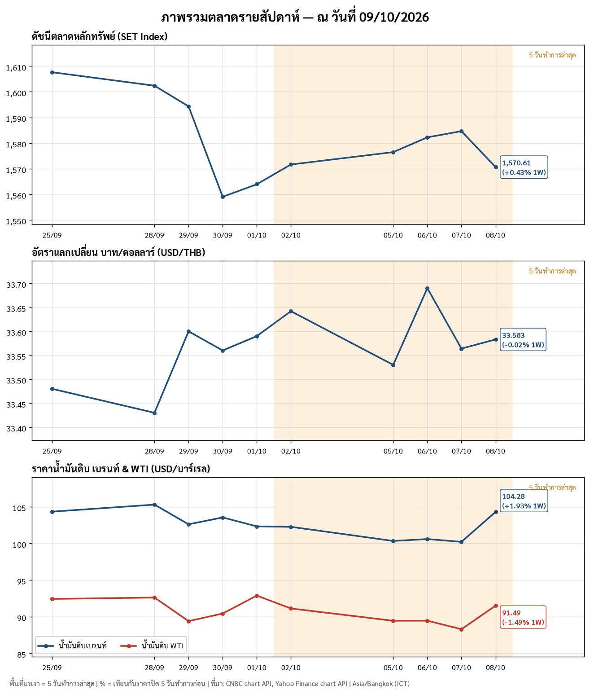
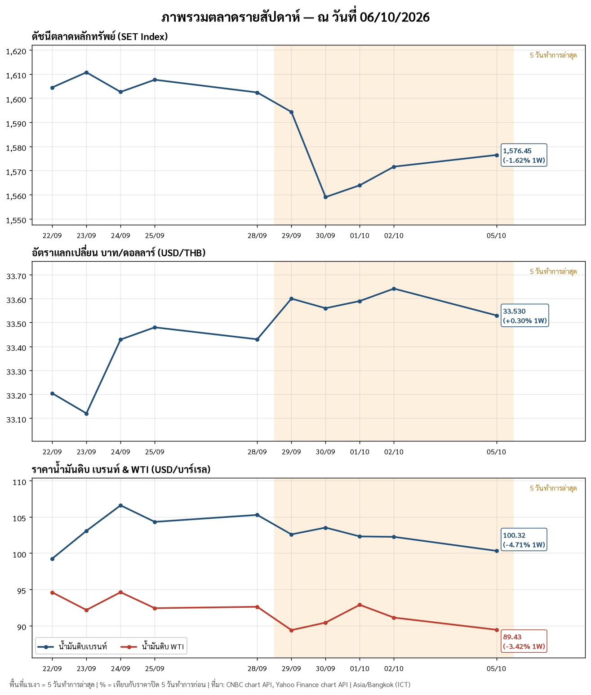

📈 กราฟตลาดรายสัปดาห์
SET Index, ค่าเงินบาท (USD/THB), น้ำมัน Brent และ WTI สรุปทุกวันศุกร์ เรียงจากสัปดาห์ล่าสุด · ทั้งหมด 3 สัปดาห์
📈 สัปดาห์ที่สิ้นสุด ศ. 16 ต.ค. 2569

📊 ภาพรวมตลาดรายสัปดาห์ — ศุกร์ 16 ต.ค. 2569 (เวลาไทย ICT)
| รายการ | ปิดล่าสุด (วันที่) | 1 สัปดาห์ | สูงสุด / ต่ำสุดของสัปดาห์ | ทิศทาง |
|---|---|---|---|---|
| 📈 SET Index | 1,573.01 (15 ต.ค.)* | −0.73% | 1,577.65 (9 ต.ค.) / 1,570.61 (8 ต.ค.) | 🔴 |
| 💱 USD/THB | 33.610 (15 ต.ค.) | +0.08% | 33.61 (15 ต.ค.) / 33.53 (12 ต.ค.) | 🔴 บาทอ่อนเล็กน้อย |
| 🛢️ Brent | $105.92 (15 ต.ค.) | +1.57% | 106.65 (12 ต.ค.) / 104.72 (9 ต.ค.) | 🔴 ต้นทุนพลังงานสูงขึ้น |
| 🛢️ WTI | $97.97 (15 ต.ค.) | +7.08% | 97.97 (15 ต.ค.) / 91.85 (9 ต.ค.) | 🔴 ต้นทุนพลังงานสูงขึ้น |
🧭 ความหมาย
- 🔴 SET สัปดาห์สั้นเหลือ 3 วันทำการ (หยุด 13 ต.ค. และวันหยุดพิเศษ 16 ต.ค.) แกว่งแคบ 1,571–1,576 จุด ปิด 1,573.01 จุด ลดลง 0.29% จากวันศุกร์ที่ 9 ต.ค. ตลาดรอผลประกอบการไตรมาส 3/69 โดยเฉพาะกลุ่มแบงก์ที่เริ่มประกาศสัปดาห์หน้า และติดตามการสู้รบในตะวันออกกลาง
- 🟡 ค่าเงินบาท ทรงตัวในกรอบแคบ 33.53–33.61 บาท/ดอลลาร์ ทั้งสัปดาห์ ยังไม่เห็นเงินทุนไหลเข้าหรือออกแรงๆ แต่ระหว่างวันศุกร์บาทแข็งขึ้นมาอยู่ราว 33.35 (ยังไม่ใช่ราคาปิด)
- 🔴 น้ำมัน WTI พุ่งราว 7% ใน 1 สัปดาห์ ขึ้นต่อเนื่องทุกวันจนเกือบแตะ $98 ส่วนเบรนท์ยืนเหนือ $105 ตั้งแต่ 12 ต.ค. เป็นแรงกดดันต่อเงินเฟ้อและต้นทุนพลังงานไทย
*ตลาดหุ้นไทยปิดทำการวันศุกร์ 16 ต.ค. (รัฐบาลประกาศวันหยุดพิเศษ) ราคาปิด 15 ต.ค. จึงเป็นราคาปิดล่าสุดของสัปดาห์ • ราคาน้ำมันและค่าเงินบาทเป็นราคาปิดของวันทำการก่อนหน้า (15 ต.ค.) เพราะตลาดนิวยอร์กยังไม่ปิด • % ในตารางเทียบกับราคาปิดเมื่อ 5 วันทำการก่อน (SET เทียบ 7 ต.ค. ส่วนค่าเงินและน้ำมันเทียบ 8 ต.ค.) • แหล่งข้อมูล: CNBC, Yahoo Finance
📈 สัปดาห์ที่สิ้นสุด ศ. 9 ต.ค. 2569

📊 ภาพรวมตลาดรายสัปดาห์ — ศุกร์ 9 ต.ค. 2569 (เวลาไทย ICT)
| รายการ | ปิดล่าสุด (วันที่) | 1 สัปดาห์ | สูงสุด / ต่ำสุดของสัปดาห์ | ทิศทาง |
|---|---|---|---|---|
| 📈 SET Index | 1,577.65 (9 ต.ค.)* | +0.38% | 1,584.63 (7 ต.ค.) / 1,570.61 (8 ต.ค.) | 🟢 |
| 💱 USD/THB | 33.583 (8 ต.ค.) | −0.02% | 33.69 (6 ต.ค.) / 33.53 (5 ต.ค.) | 🟢 บาทแข็งเล็กน้อย |
| 🛢️ Brent | $104.28 (8 ต.ค.) | +1.93% | 104.28 (8 ต.ค.) / 100.20 (7 ต.ค.) | 🔴 ต้นทุนพลังงานสูงขึ้น |
| 🛢️ WTI | $91.49 (8 ต.ค.) | −1.49% | 91.49 (8 ต.ค.) / 88.28 (7 ต.ค.) | 🟢 |
🧭 ความหมาย
- 🟢 SET ฟื้นจากจุดต่ำปลายเดือน ก.ย. (1,559 เมื่อ 30 ก.ย.) ขึ้นมาแตะ 1,584 กลางสัปดาห์ ก่อนย่อลงวันพฤหัสฯ แล้วดีดกลับวันศุกร์ ปิดสัปดาห์บวกเล็กน้อย แต่ยังต่ำกว่าระดับ 1,600 เมื่อต้นเดือนก่อน
- 🟡 ค่าเงินบาท ทรงตัวในกรอบแคบ 33.53–33.69 บาท/ดอลลาร์ ทั้งสัปดาห์ ยังไม่มีสัญญาณเงินทุนไหลเข้าหรือออกแรงๆ
- 🔴 น้ำมัน เบรนท์กระโดดราว 4% ในวันเดียว (8 ต.ค.) กลับขึ้นเหนือ $104 ต้องจับตาผลต่อเงินเฟ้อและต้นทุนพลังงานไทย ส่วน WTI แม้ขึ้นวันเดียวกัน แต่ทั้งสัปดาห์ยังติดลบ
*SET วันศุกร์ใช้ราคาล่าสุดจาก CNBC ณ 17:03 น. หลังตลาดปิด ส่วนในกราฟแสดงถึงวันที่ 8 ต.ค. • ราคาน้ำมันและค่าเงินบาทเป็นราคาปิดของวันทำการก่อนหน้า (8 ต.ค.) เพราะตลาดนิวยอร์กยังไม่ปิด และ % เทียบกับราคาปิดเมื่อ 5 วันทำการก่อน (1 ต.ค.) ส่วน SET เทียบกับราคาปิดวันศุกร์ที่ 2 ต.ค. • แหล่งข้อมูล: Yahoo Finance, CNBC
📈 สัปดาห์ที่สิ้นสุด อ. 6 ต.ค. 2569

กราฟอย่างเดียว (ไม่มีบทสรุปข้อความสำหรับสัปดาห์นี้)
ข้อมูลจากแหล่งเปิด (Yahoo Finance, CNBC ฯลฯ) เพื่อประกอบการติดตามข่าวเท่านั้น ไม่ใช่คำแนะนำการลงทุน